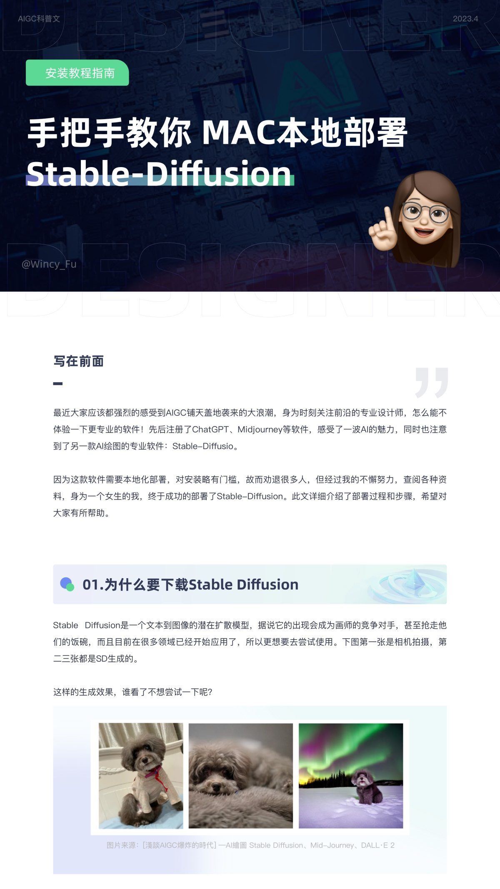
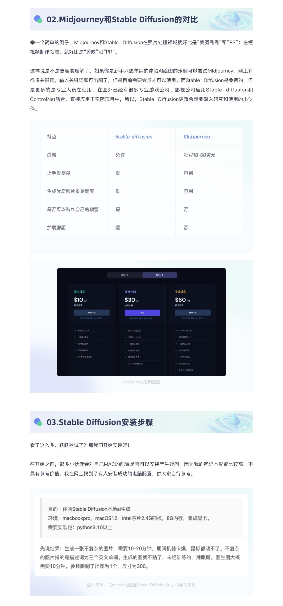
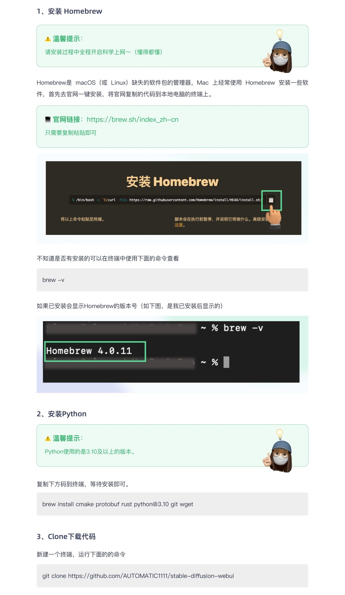
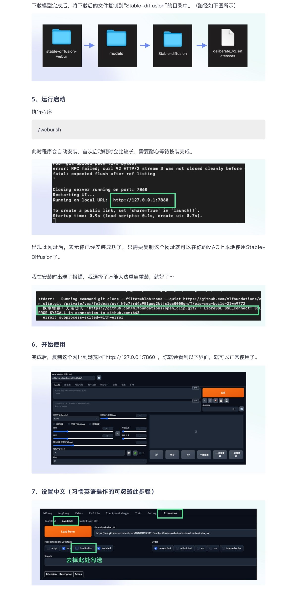
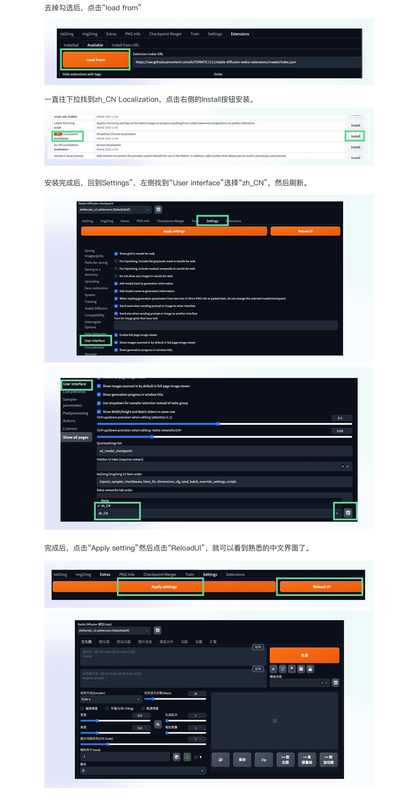
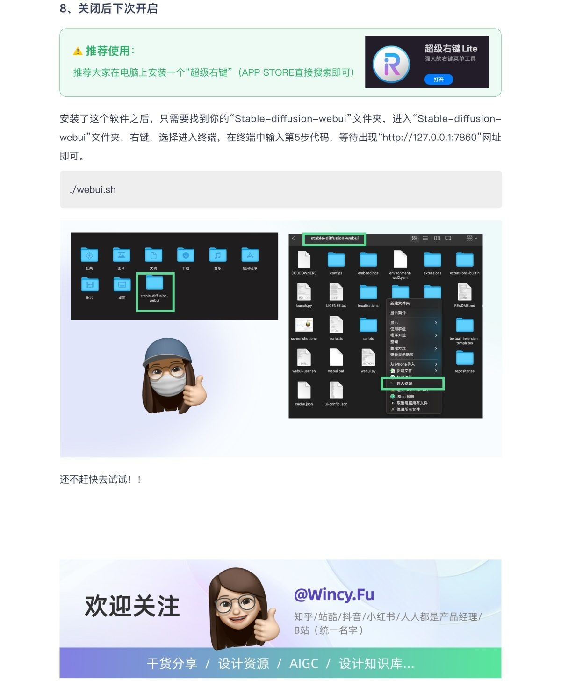

手把手教你 Mac 本地部署 Stable Diffusion
来自优设网 Wincy_Fu 的保姆级教程：从为什么本地部署、Mac 与 Midjourney 的对比，到 Homebrew / Python / 模型下载 / 启动与设置中文的完整步骤，命令与截图一步不落。
本文整理自优设网《保姆级教程！手把手教你 Mac 本地部署 Stable-Diffusion》，版权归原作者所有。命令、路径与步骤按原文转录，配图为原文截图，方便对照操作。
01 / 写在前面：为什么要本地部署
作者观察到 AIGC 浪潮下，设计师陆续体验了 ChatGPT、Midjourney 等工具。由于 Stable Diffusion 需要本地部署、对安装有门槛，劝退了不少人；作者查阅资料后成功在 Mac 上部署，于是整理出这份过程记录。
Stable Diffusion 是文本到图像的潜在扩散模型。作者认为它的出现会成为画师的竞争对手、甚至抢走饭碗，目前已在很多领域开始应用，因此更值得尝试。

02 / Midjourney 对比与安装前准备
作者用一个比喻区分两者：Midjourney 和 Stable Diffusion 在图片处理领域的差别，就好像「美图秀秀」和「PS」——前者简单、按关键词即可出图且上手容易，但需要会员才能使用；后者免费、可配合 ControlNet 等插件用于实际项目，更适合想深入研究的人。

两者的具体差异如下：
- 价格——Stable Diffusion 免费；Midjourney 每月 10-60 美元。
- 上手难度——Stable Diffusion 难；Midjourney 容易。
- 生成优质图片惊艳程度——Stable Diffusion 难；Midjourney 容易。
- 是否可以制作自己的模型——Stable Diffusion 是；Midjourney 否。
- 扩展画面——Stable Diffusion 是；Midjourney 否。
03 安装前准备
作者笔记本配置较高，便以其为参考——机型 MacBook Pro、系统 macOS12、Intel i7 2.4GHz 四核、8G 内存、集成显卡；另需安装 Python 3.10。作者提醒：生成一张不复杂的图片需 10-20 分钟，期间可能卡顿、鼠标动不了；不复杂的图描述约三个英文单词即可，生图大概率 10 分钟内，参数默认出图 1 张、尺寸 512。
03 / 安装 Homebrew、Python 与 Clone 项目
1. 安装 Homebrew
Homebrew 是 macOS（或 Linux）缺失的软件包管理器。（温馨提示：安装过程需全程开启科学上网。）官网 https://brew.sh/index_zh-cn，只需复制粘贴官网命令到本地终端。验证是否安装成功，在终端输入 brew -v；若显示 Homebrew 版本号（原文为 4.0.11）即为成功。
2. 安装 Python
使用 Python 3.10 及以上版本，复制下方命令到终端等待安装即可：
brew install cmake protobuf rust python@3.10 git wget
3. Clone 下载代码
新建一个终端，运行：
git clone https://github.com/AUTOMATIC1111/stable-diffusion-webui

04 / 下载 SD 模型
代码 Clone 完成后，还需要下载模型，文件大小一般都是 GB 级别。作者为方便在 Civitai 上下载了一个小的，大家可按需下载，二选一即可。
- SD 1.4——huggingface.co/CompVis/stable-diffusion-v-1-4。
- SD 1.5——huggingface.co/runwayml/stable-diffusion-v1-5。
- v1-5 权重选择——v1-5-pruned-emaonly.ckpt（4.27GB，显存占用少、适合推理）；v1-5-pruned.ckpt（7.7GB，ema 权重、显存占用多）。
- Civitai 下载——https://civitai.com/，也可直接下载各种模型。
- 模型放置路径——stable-diffusion-webui / models / Stable-diffusion。

05 / 运行启动
在终端执行程序，程序会自动安装依赖，首次启动耗时较长，需要耐心等待装完：
./webui.sh
成功后终端会出现网址 http://127.0.0.1:7860，复制该网址即可在 Mac 本地使用 SD。作者安装时曾报错，选择「万能法重启重装」后解决。
06 / 开始使用
完成后，复制网址 http://127.0.0.1:7860 到浏览器，即可看到熟悉的操作界面并正常使用了。
07 / 设置中文（习惯英文可跳过）
- 1. 安装语言包——Settings → User interface，去掉勾选「Load from local」，下拉找到 zh_CN Localization，点右侧 Install 安装。
- 2. 切换语言——装完后回到 Settings → User interface → Language 选 zh_CN。
- 3. 应用生效——点击「Apply settings」，再点击「Reload UI」，即可看到中文界面。

08 / 关闭后下次开启
推荐使用「超级右键」（App Store 直接搜索安装）。安装后找到「Stable-diffusion-webui」文件夹，右键选择进入终端，输入第 5 步的命令 ./webui.sh，等待出现 http://127.0.0.1:7860 网址即可。
